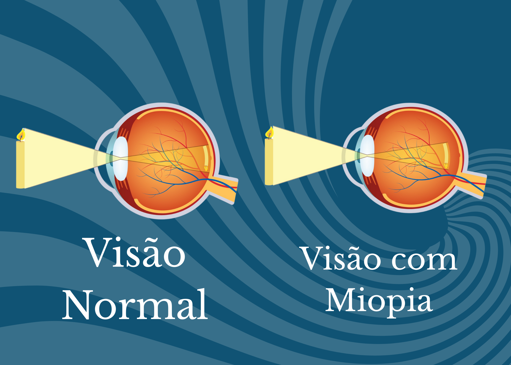

Miopia
O que é Miopia?
A miopia é um erro de refração comum em que os objetos próximos são vistos com nitidez, enquanto os distantes aparecem desfocados. Isso acontece quando o globo ocular é mais longo do que o normal ou a córnea é muito curva, fazendo com que a luz seja focada antes da retina.
Sintomas
Os principais sintomas da miopia incluem:
- Dificuldade para enxergar de longe;
- Forçar a vista para ver objetos distantes;
- Dores de cabeça frequentes;
- Cansaço visual, principalmente ao dirigir ou assistir TV;
- Necessidade de apertar os olhos para enxergar melhor.
Causas
A miopia pode ser hereditária, mas também pode se desenvolver por fatores ambientais, como excesso de uso de telas e pouco tempo ao ar livre durante a infância.
Diagnóstico
O diagnóstico é feito por um oftalmologista, por meio de exames de acuidade visual e refração, com a ajuda de lentes de teste.
Prevenção
Não há como prevenir a miopia em si, mas é possível retardar sua progressão adotando hábitos saudáveis:
- Evitar uso excessivo de telas;
- Fazer pausas frequentes durante leituras ou estudos;
- Passar mais tempo ao ar livre, especialmente na infância;
- Manter consultas regulares com o oftalmologista.
Tratamentos
Os principais tratamentos para miopia são:
- Óculos de grau: Corrigem a refração e melhoram a visão;
- Lentes de contato: Uma opção prática para muitas pessoas;
- Cirurgias a laser: Como LASIK ou PRK, que remodelam a córnea e corrigem a refração;
- Ortoceratologia: Lentes noturnas que remodelam a córnea temporariamente.

Curiosidades
- Grau leve: até -2.00;
- Grau moderado: de -2.00 a -6.00;
- Grau alto: superior a -6.00, exigindo atenção contínua e exames frequentes.